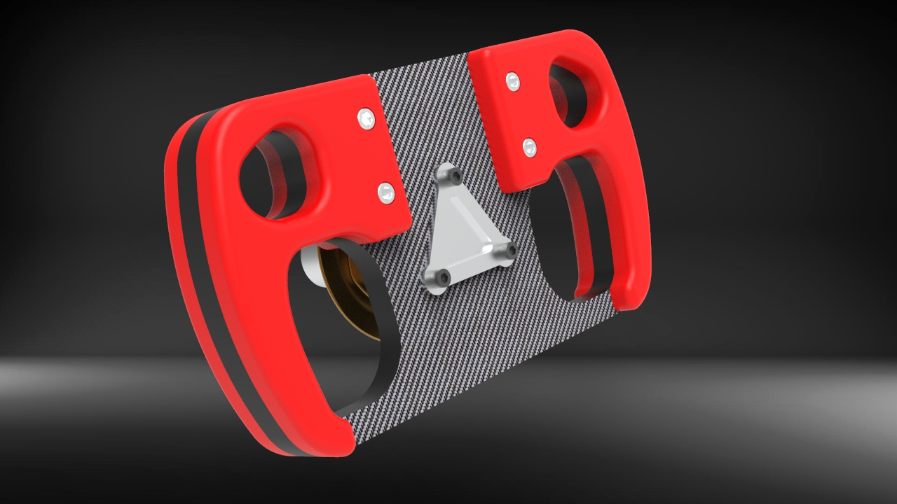
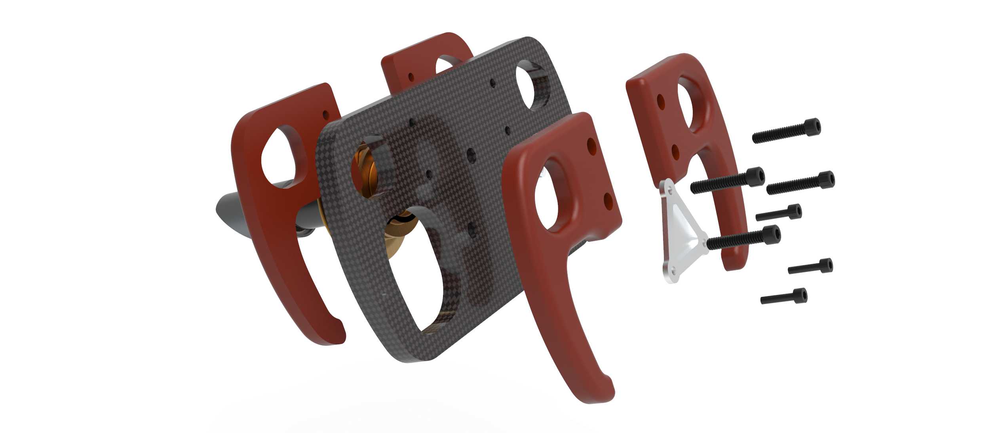
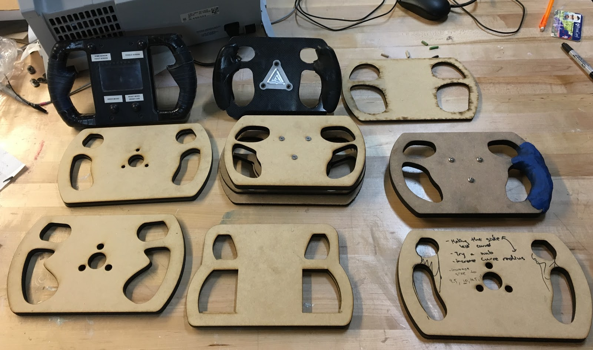
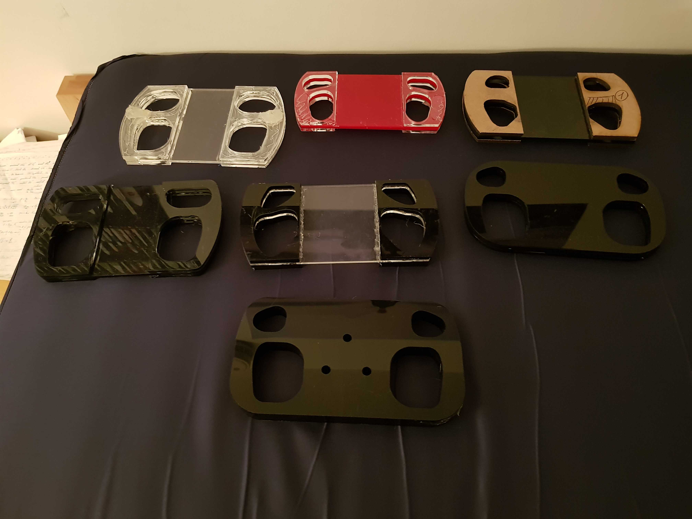
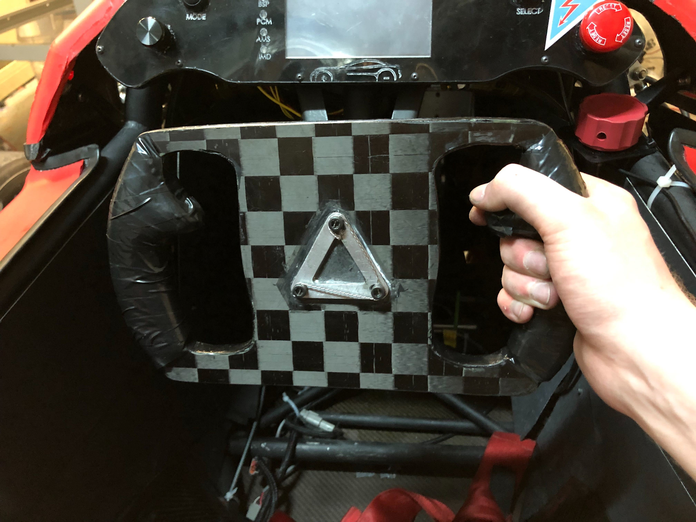
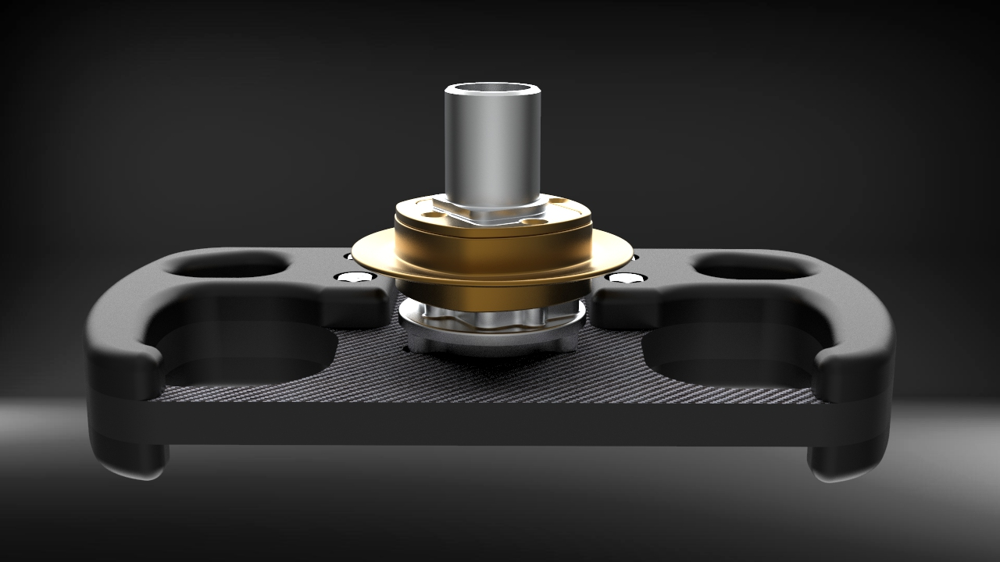
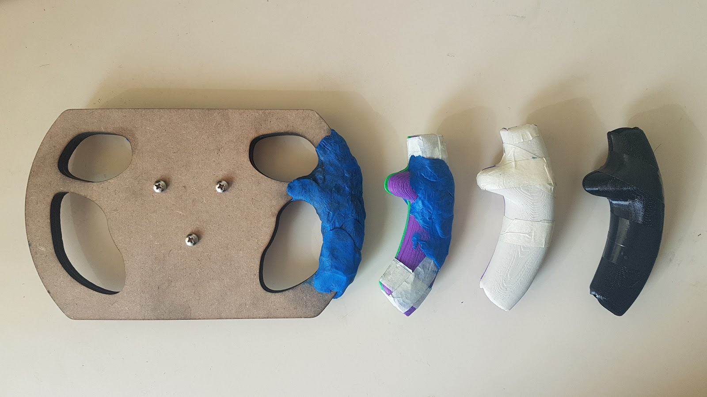
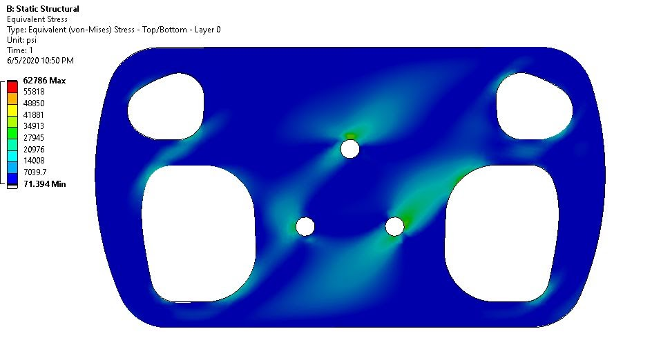
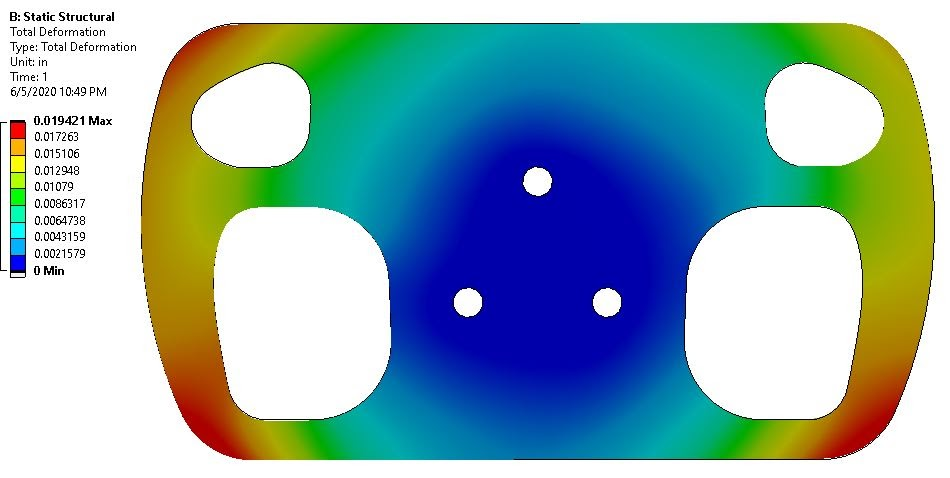

FSAE Steering Wheel
Overview
As a Mechanical Team Member of Penn Electric Racing, a FSAE racing team, I designed and optimized a steering wheel for the Driver Interface subteam. The design is the result of an iterative design process based on driver feedback and focused on driver customizability. The carbon fiber steering wheel features a racing-grade quick release and interchangeable grips modelled after every driver on the team.
Design Goals
The steering wheel was designed using the following criteria:
- Driver customizability: the shape of the wheel should be optimized for every driver on the team.
- Manufacturability: the wheel must be easily manufacturable, preferably in-house.
- Strength: the wheel must be able to sustain a maximum torque of 200 ft. lb. (135 Nm).
- Weight: the steering wheel must be lightweight enough as not to hinder the driveability of the racecar.
- Egress: the driver has to be able to jettison the wheel quickly in case of a crash, as to exit the racecar in less than 5s.
Design Overview
Iterative Design Process
The steering wheel is the result of more than 15 design iterations, guided by ergonomic principles and driver feedback. The prototypes were laser cut and 3D printed and tested on previous racecars as well as an in-house mockpit.
  Quick-release
A Krontec quick release was chosen in order to minimize slop and egress time in case of a crash.

Carbon Fiber Plate
The base of the steering wheel was frabricated using a carbon fiber vacuum layup. A low-density foam core is sandwiched between multiple plies of carbon fiber and infused with epoxy.

Grips
The grips were designed to be interchangeable between competition events as to fit the needs of every driver on the racing team. The grips are planned to be modelled using 3D-scanned clay molds.
Testing
The Strength of the carbon fiber wheel was tested both experimentally and using ANSYS ACP, validating the design for future use.
 